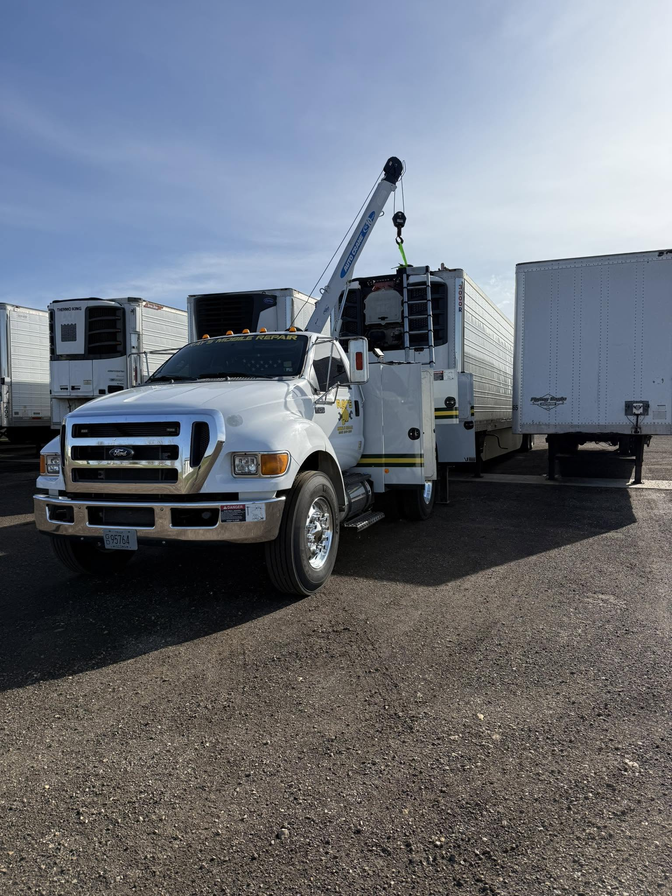

Reduce Downtime
Mobile support helps avoid unnecessary shop trips when repairs or maintenance can be handled on site.
Fleet Service
Downtime costs money. Ray's Mobile Repair helps local businesses keep trucks, trailers, and equipment moving with on-site repair, maintenance, and inspection support.
Mobile support helps avoid unnecessary shop trips when repairs or maintenance can be handled on site.
Ray's can come to the shop, yard, farm, roadside location, or business when availability allows.
Support for businesses, farms, contractors, owner-operators, municipalities, and local commercial fleets.
Trucks, Trailers, Equipment
Ray's Mobile Repair focuses on practical service for the vehicles and trailers local businesses depend on. Call to discuss your fleet size, equipment types, maintenance needs, and inspection support.

Request Fleet Support
Call Ray directly for urgent issues or send a fleet request for non-urgent maintenance and inspection support.